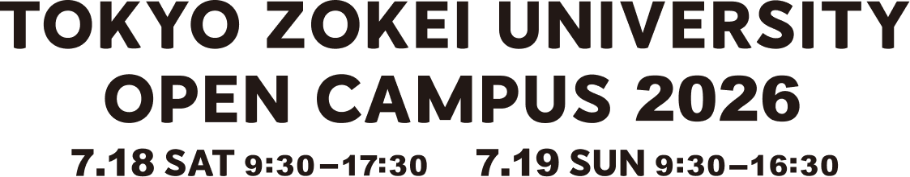
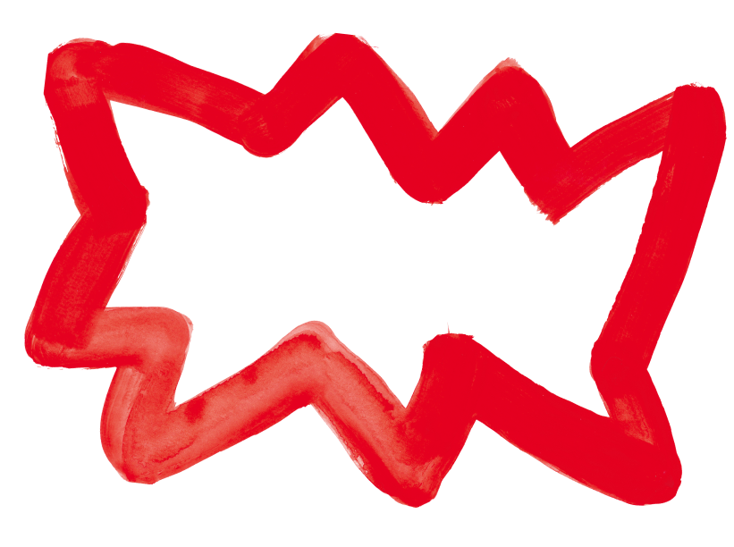
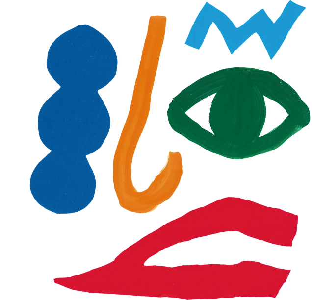

SPICEとは？
テーマは「スパイス」で、顔をビジュアル的に表現しました。
スパイスは料理で使われる調味料という意味があります。
調味料は刺激、変化をもたらすもので、今回はその要素を東京造形大学で得られる経験や学びと捉えました。
東京造形大学の強みは他専攻領域の学びを得られること、そして大学の規模がコンパクトであるため、領域を越えて協力したり、互いに刺激を受けながら学べることだと思います。
そうした環境の中で、自分一人では思いもよらなかった刺激に出会い、想像していなかった顔が生まれます。これは、異なる色や形を組み合わせることで誕生する顔。偶然性を表現しました。
オープンキャンパスについて
当日は作品展示・上映はもちろん、体験授業や学生のプレゼンテーションによる作品講評会、各専攻領域のさまざまなワークショップも数多く企画しています。緑に囲まれた自然豊かな東京造形大学のキャンパスで、どんなデザインと美術の学びがあるのか？ぜひ自身の五感で体験しにいらしてください。
※オープンキャンパスで教員による大学院入試の事前相談は行っておりません。
各専攻領域
アクセス
東京造形大学
〒192-0992 東京都八王子市宇津貫町1556
TEL：042-637-8111
交通：JR横浜線相原駅よりスクールバス5分・徒歩15分
ご参加に際してのお願い
ご来場にあたっては、以下のお願いを事前にご確認ください。
- 当日、37.5度以上の発熱症状がある場合は、参加をお控えください。
- 自家用車でご来校される場合、キャンパス内に駐車場はご用意しておりませんので、本学の最寄り駅（相原駅）にあるコインパーキングをご利用ください。当日は、JR横浜線 相原駅よりスクールバスを運行します。なお、相原駅から本学までは徒歩約15分ですので、徒歩で来校することも可能です。
- 当日、食堂やカフェテリアは営業しておりますので、昼食にご利用いただけます。（それ以外の場所での食事はご遠慮ください。）
- オープンキャンパスで教員による大学院入試の事前相談はできません。

